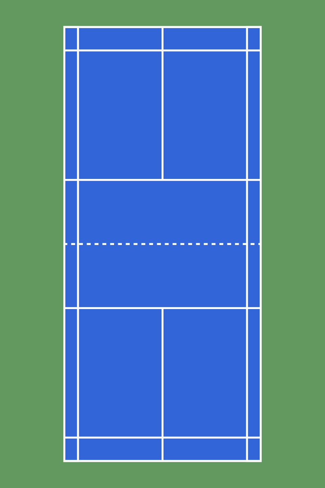

Sulkapallossa on kolme pääasiallista pelimuotoa: kaksinpeli, nelinpeli ja sekanelinpeli. Kaksinpelissä pelaa kaksi pelaajaa, nelinpelissä neljä pelaajaa (kaksi paria) ja sekanelinpelissä pelaa kaksi paria, joissa on sekä mies- että naispuolisia pelaajia.
Pisteytys ja tuomarointi Sulkapallossa ottelu pelataan yleensä paras kolmesta erästä 21 pisteeseen. Erän voittamiseen tarvitaan vähintään kahden pisteen ero. Pisteen saa jokaisesta voitetusta pallosta riippumatta siitä, kumpi syötti.
Ottelua valvoo tuomari, joka seuraa pisteitä, syöttöjä ja sääntöjen noudattamista. Kilpailuissa voidaan käyttää myös rajatuomareita tarkkailemaan, osuuko sulka kentän sisä- vai ulkopuolelle.

Takaraja on kentän uloin päätyviiva. Pallo on pelissä, kun se osuu viivan sisäpuolelle tai viivalle.
Syötössä käytetään eri rajoja:
Keskiviiva jakaa syöttöalueet vasempaan ja oikeaan puoleen. Pelaaja syöttää eri puolilta pistetilanteen mukaan.
Verkko sijaitsee kentän keskellä ja jakaa kentän kahteen puoliskoon. Pallon täytyy mennä verkon yli osumatta siihen liikaa.
Muista, että harraste- ja mökkisulkapallossa sääntöjä ei tarvitse ottaa liian tarkasti. Tärkeintä on hauska ja reilu peli.